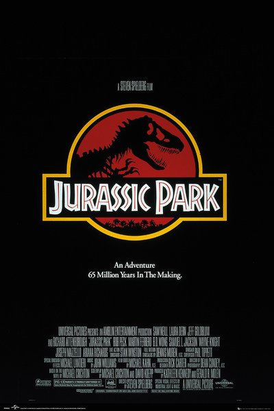
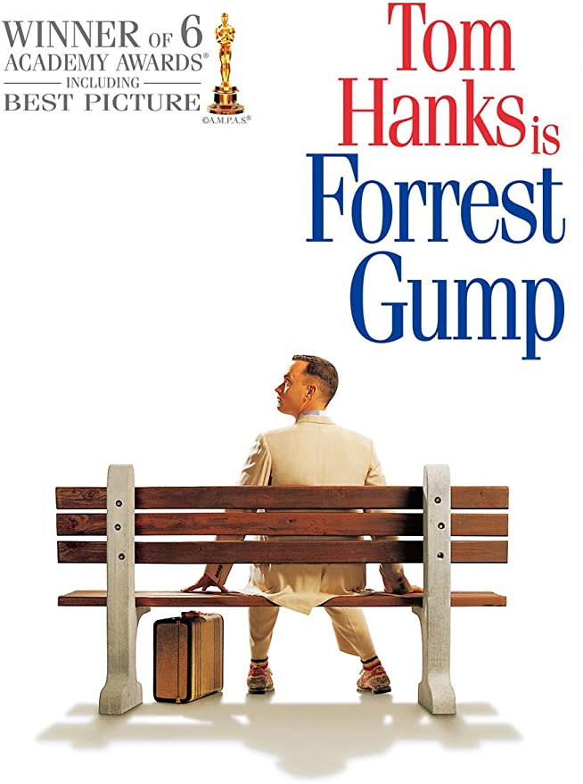
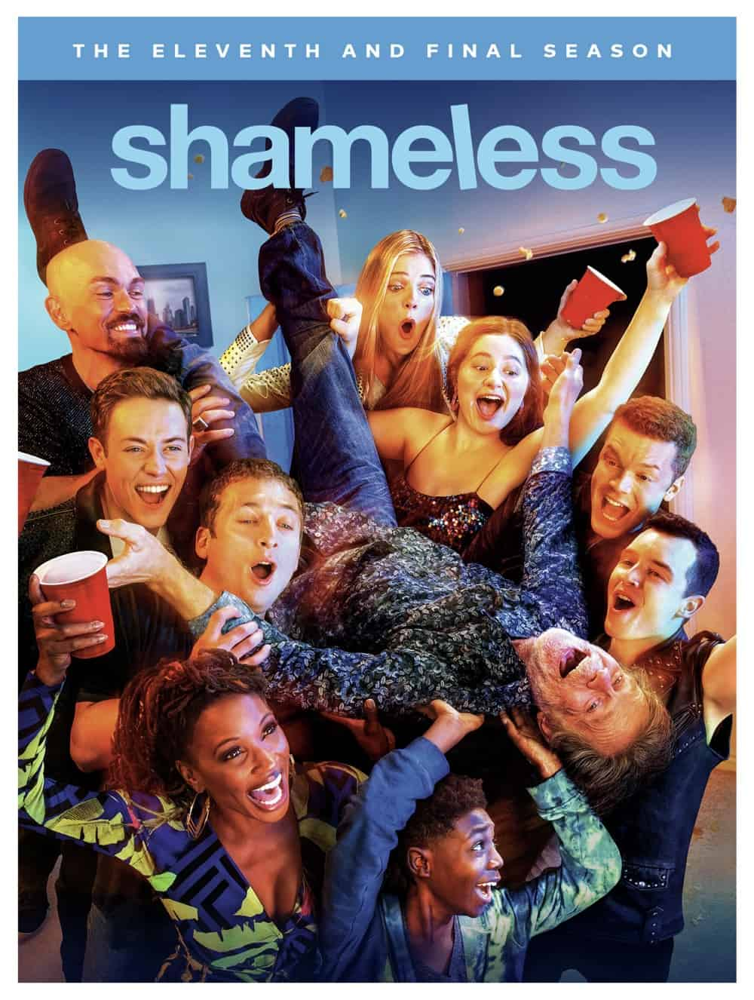
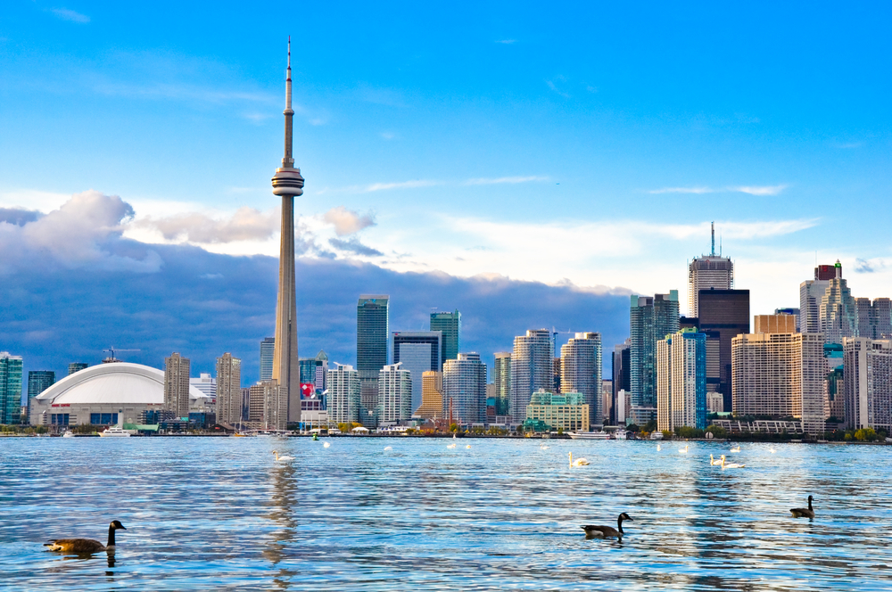
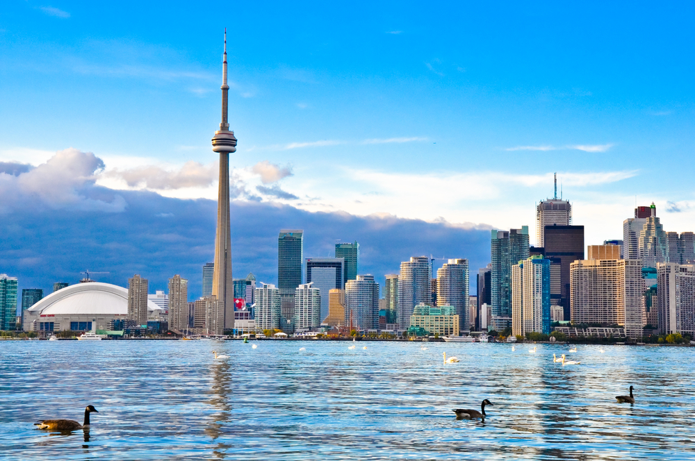
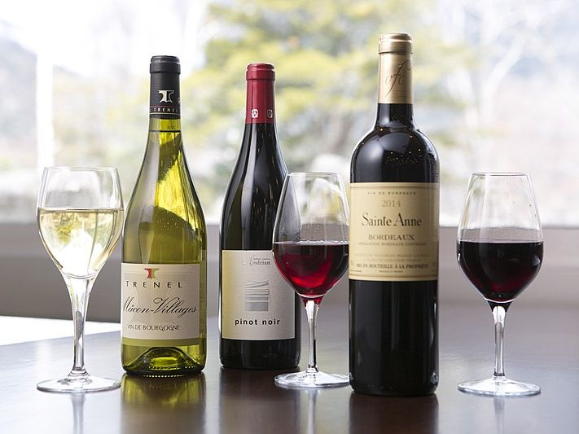
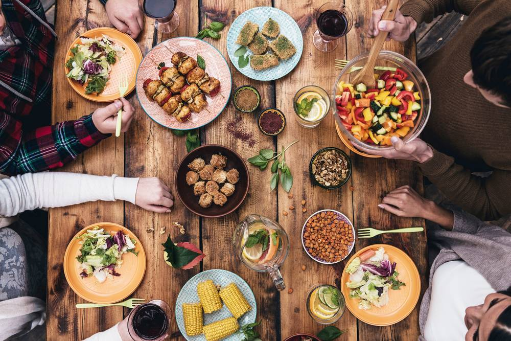

Profile of Maiko Honda
- 名前
- 本多 真依子（ほんだ まいこ）
- ニックネーム
- マイコ、マイコー、マイケル、まいこはぁん
- 出身
- 広島
- 住んだ事のある場所
- 広島（３０年以上）、カナダ,トロント（１年半）、東京（１か月）
- 性格・メッセージ
- 性格は、かなりの笑い上戸で、よく笑いよく泣くタイプで酒好きです。年々感動モノに対して涙腺が弱くなっていて、ヒューマンストーリーの映画やドラマ、また明治安田生命のＣＭは危ないです。
人前に立って何かを発言する行為（＝今この瞬間）が最大の不得意項目で、心臓が出そうです。
お酒という字に弱いのですが、アルコールには結構強いです。
最初の職場が業務用の酒屋さんでしたので、昼夜問わずお酒に囲まれて生活していました。ワインを販売する機会が度々あったという事もあり、ワインスクールでワインアドバイザーの勉強を長くしていました。
ところが４年前、ある事をきっかけにカナダはトロントへ留学を決断し渡航をしました。そこで出会った方々や文化の影響を大いに受け、考え方や自分の中での文化が１８０度変わりました。トロントを選んだ理由は、寒い季節が好きだからということと、ニューヨークへ行きたかった事が大きな理由です。有難いことに、留学中に出会った国際色豊かな友人と今でもSNSでお互い連絡を取り合ってます。中でも、ブラジル、メキシコ、サウジアラビア、トルコの友人が多く多種多様な文化が今でも見え隠れしたりそういった事について話すのもまた楽しい時間となっています。
最後に・・・十人十色それぞれの物語を経て、同じタイミングで集まった皆さんと、これからの半年間を共有していける事をとても光栄に思っています。
趣味・好きな事
- 映画鑑賞（主に洋画）
- 両親の影響があり幼少期から映画と親しみながら育ちました。初めのうちはジブリ映画が好きで特に「となりのトトロ」は当時ビデオテープでしたがビデオデッキが壊れるまで観てました。次第に洋画に移行し、中でもジュラシックパークを初めて観た日の衝撃は今でも覚えています。また、風邪をひくと何故かホームアローンを観てしまうという謎現象が起きます。
- 影響を受けた作品
- ジュラシックパーク 始め、スピルバーグ作品
- フォレストガンプ
- ホームアローン
- レオン
- The Notebook（君に読む物語）
- Big Fish
- 天使にラブソングを・・
- プラダを着た悪魔
- ワンダー 君は太陽
- 松本清張作品
- 男はつらいよ 他
- 海外ドラマ
- 映画と同じく、海外ドラマからも影響を受けた作品が多いです。また、しゃべり言葉であるセリフを聞くことによって、英語の文法やリスニングの勉強にも役立っています！
その中でも最初に記載していますが、Shamelessについては、大袈裟かもしれませんが自分の人生においての特効薬の様な存在であり辛かった時期もこの物語に支えられる部分が多くありました。もしこの作品をご存知で、しかもファンですという方がいらっしゃるなら、中々貴重な存在ではないかなと思う程描かれている内容はシカゴのサウスサイドを舞台にしたリアルなストーリーとなっています。このドラマ、2011年から放送が開始されていて先日１１シーズン目にしてファイナルシーズンに入り、先月アメリカで最終回を迎え、１０年という歴史に幕を閉じました。日本ではこのファイナルシーズンの放送が年内に控えている状態なので、待ち遠しくもあり名残惜しくもありですが放送を楽しみにしています。 - 影響を受けた作品
- Shameless
- FBI
- ER 他
- 国際交流
- 地元に住む外国人の方々や留学先・旅先で出会ったら方々との交流を深めることが好きです。
- 飲酒
- ワイン（＝ワインテイスティング）、日本酒、ブランデー 他
- 料理
- お酒に合うもの、お弁当、作り置き、おやつ
- 歌唱
- こんなに人前に立つのが苦手な癖に、歌手をしてます。 主にライブ活動が中心ですが、偶にデモテープのレコーディングのお仕事を少しさせて頂く事があります。コロナ禍で今は活動休止してますが、また落ち着いて歌える機会があれば良いなと思っています。 が、葛藤ありです！！人前に立つのが苦手なのに歌唱は好きなので心の葛藤が毎回激しい。毎回ライブの数週間前から緊張しています。
- 音楽鑑賞
- 洋楽邦楽ポップス、Jazz
- 写真
- 料理や風景
- 乗馬
- 趣味として言えるかわかりませんが乗馬クラブで乗馬を習ってます。コロナ禍で暫く行けていない為きっとまた久々に騎乗する際は怖いかなぁと思います。
- 海外旅行
- ニューヨークが好きで留学中２度訪れました。また実のところパンデミック寸前の去年始めに行ってきました。今思うとなかなかリスキーな旅をしたなと思ってます。将来１か月でも住んでみたいなと思っています。
- また、マンハッタン中心にグーグルマップの機能を使って行きたいお店にフラグを立てたりして、次回の旅行プランを練っています。
- 恐竜・・・
- ちょっと恥ずかしいんですけど子供の頃から恐竜が好きで、この発端は映画ジュラシックパークが大いに影響しています。海外の博物館で化石を見たり、SNSで写真を見たりするのも好きです。



 



オススメしたいこと
●YouTube
Naokiman Show（都市伝説系）
料理研究家リュウジのバズレシピ
kattyanneru/かっちゃんねる
→都市伝説やUFO、宇宙についてなど、数々の不思議についてを面白く考察するチャンネルです。中でも宇宙についてのモチベ動画がロマンがあって面白いです。右の写真にもあります、2036年から来たとされるジョンタイターさんについての動画も、信憑性が高いのではと信じてしまいそうになる程面白くて、かなりオススメです。
→リュウジ先生が酔っぱらいながら簡単で美味しくお酒にも合うレシピを提供。
→美味しい！簡単！コスパ良し！の家庭料理チャンネル。
コロナが収束したら・・
●トロント
気づかない心の疲れまでをも癒す場所だと私は思います。異文化の為、お互いの文化を尊重しあっており、人と人との心の距離感が近い。日本食料理店も多いので、日本人には居心地が良い場所なのではないかなと私は思います。
●ニューヨーク
皆さんニューヨークへ行った事はありますか？映画の舞台にも度々なるニューヨークはいろいろな意味で予想を覆される場所だと私は思います。一生に一度は行くべき場所としてオススメします！
NY Public Library (ホームページ) (地図)
→NY中心部にある公共図書館。よく映画にも出てきます。美術館や宮殿を思わせる美しい内装に心奪われます。そんな美しい装飾がひときわ目立つ大広間では多くの学生が黙々と勉強をしています。
Rolf's (ホームページ) (地図)
→年中クリスマスが楽しめるドイツ料理店。実は去年始めに行ってきました。
Vessel (ホームページ) (地図)
→2019年にオープンした大規模再開発地区のハドソンヤード内にある"Vessel（ベッセル）"と呼ばれる建物。入場料はなんと無料。
Starbucks Reserve Roastery New York (ホームページ) (地図)
Edge (ホームページ) (地図)
ニューヨークの絶品パストラミサンド
→実は東京にもある、スターバックスリザーブロースタリー。お酒も提供するスタバとして有名ですが、本場ニューヨークのスタバは日本とは雰囲気も少々違うため、リザーブロースタリーにも期待が高まります。
→Vesselと同じく、Hudson Yardsという地区内にあるランドマークタワーです。2020年にオープンしたばかりで、屋上100階に位置するスケルトンの展望デッキは今のところ西半球一高いそうです。